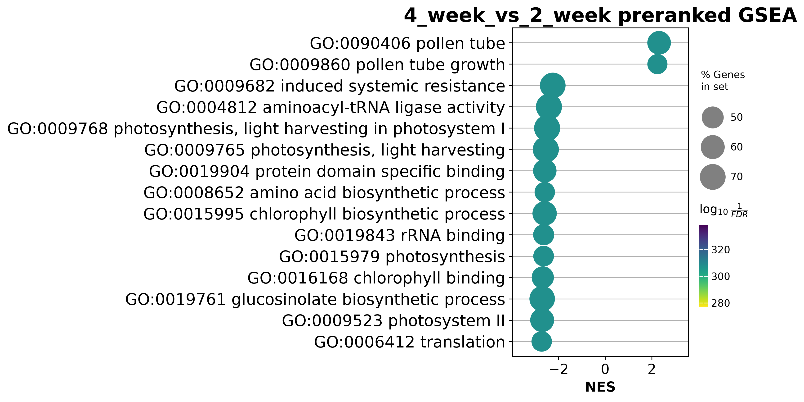
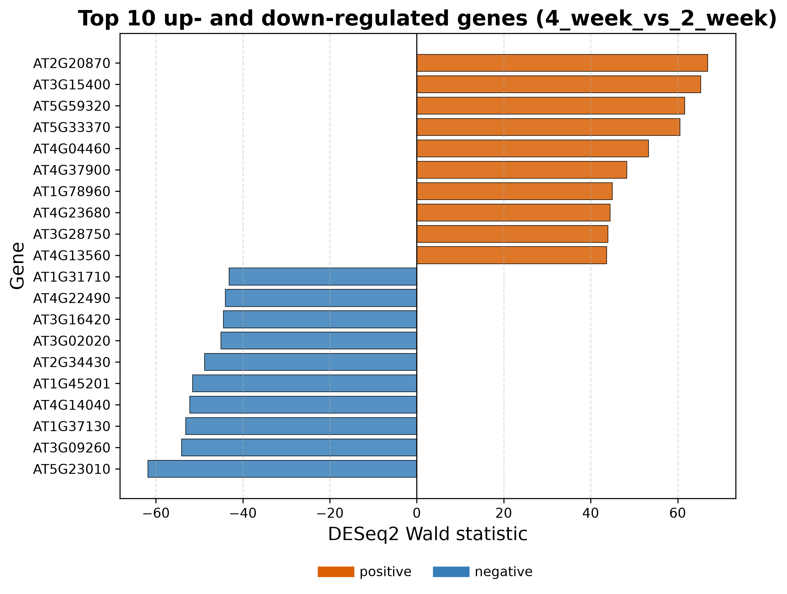
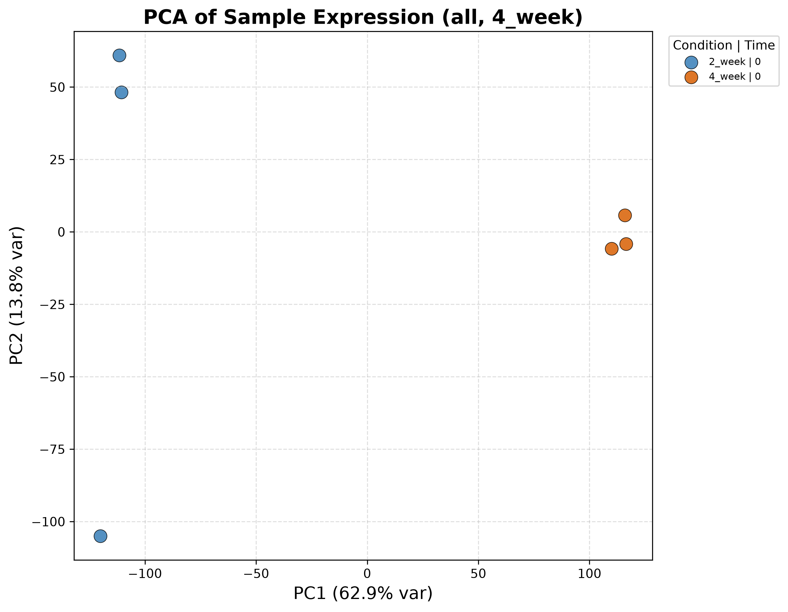
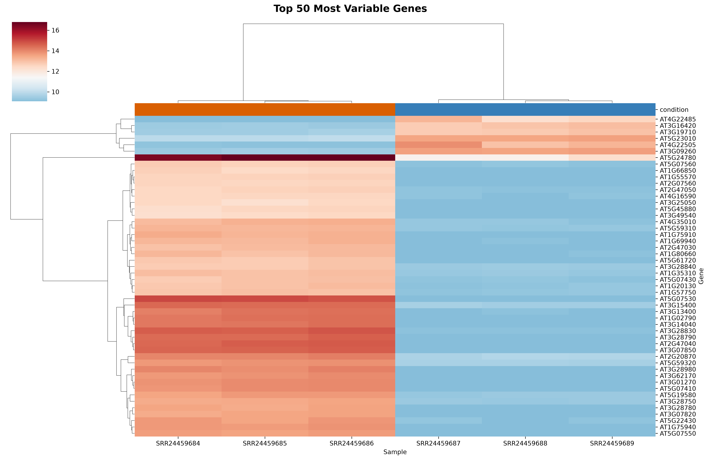
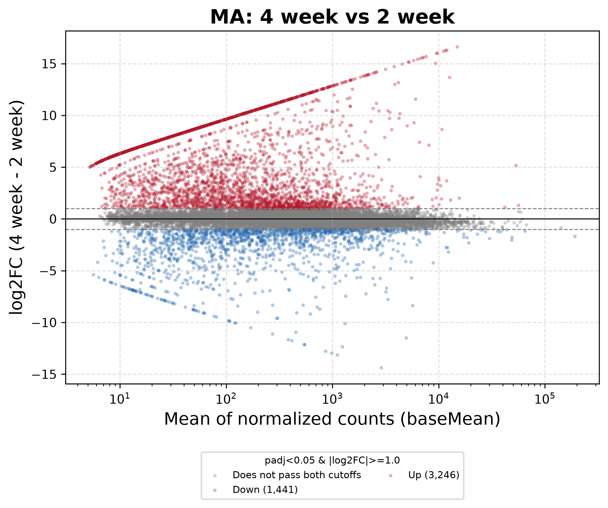
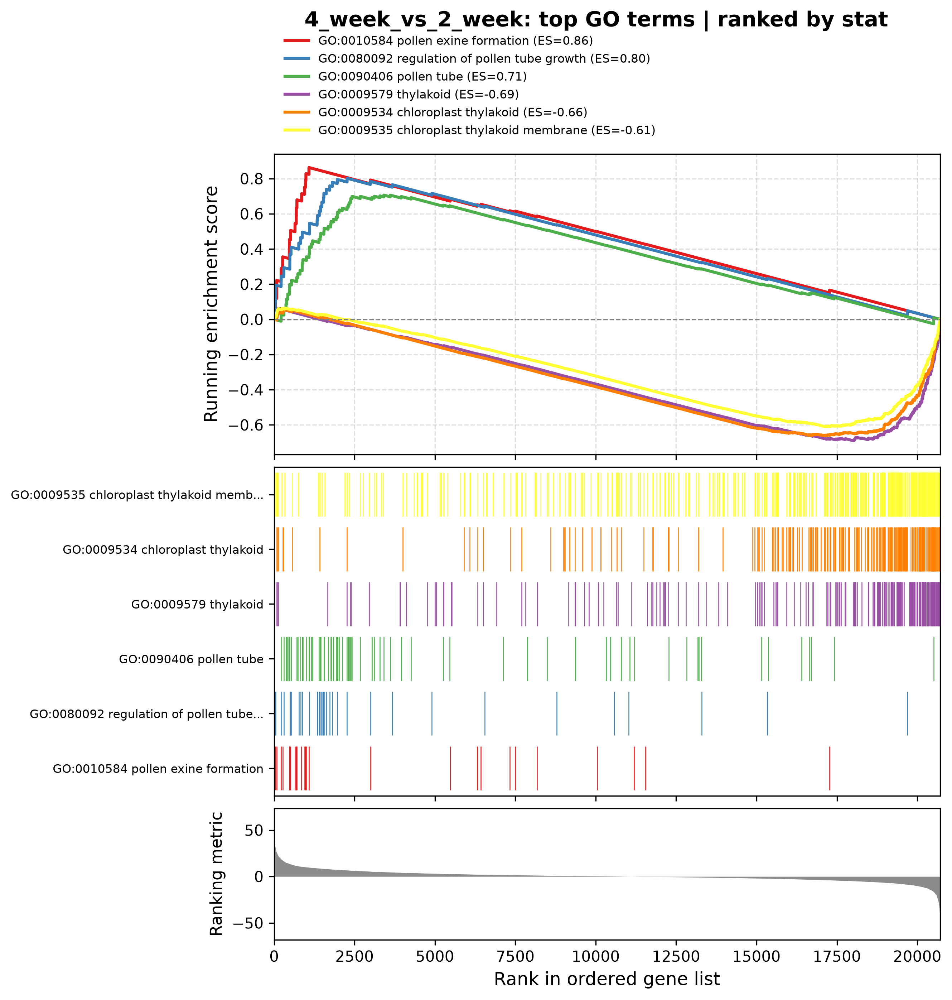

Arabidopsis: from samples to gene sets.
What changes between two-week shoot apices and four-week inflorescences?
Public study PRJNA968041 contains six Col-0 samples, three per group. These figures come from the completed AidCistrome analysis: Salmon quantification, a reviewed ~age design, DESeq2 differential expression and preranked GO enrichment.
The contrast is four-week / two-week. Age and tissue change together, so the comparison cannot separate their effects or establish a regulatory mechanism. These are AidBio analysis outputs, not figures reproduced from the publication.













The original study
Tieqiang Hu, Xiaohui Li, Liren Du, Darren Manuela and Mingli Xu (2023). PNAS 120(22): e2221181120. The publication investigates how LEAFY and APETALA1 regulate zinc-finger repressors during floral development.
Read the original publication → · BioProject PRJNA968041 →
Study authors generated the sequencing data. AidBio's figures illustrate a separate computational reanalysis of that public dataset; they are not presented as the authors' published results or as independent experimental validation.